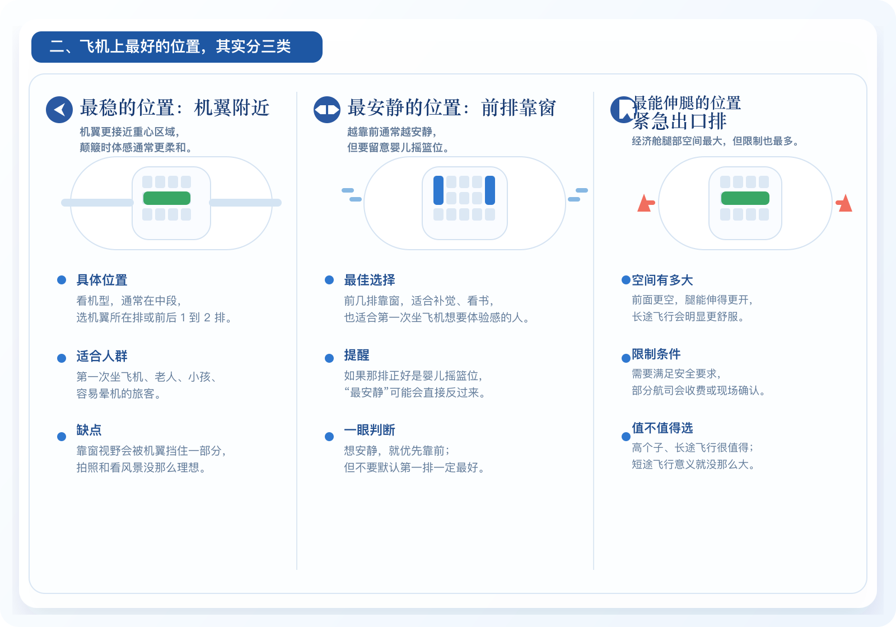
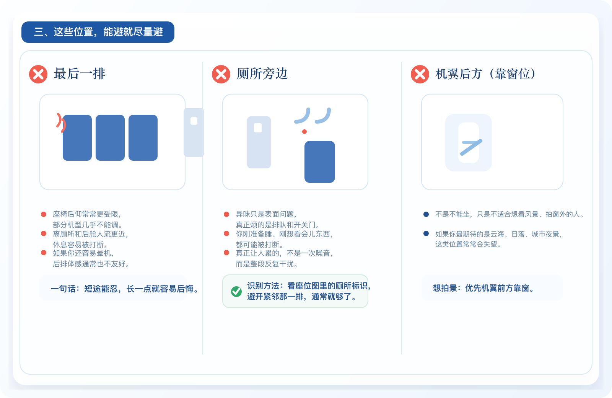
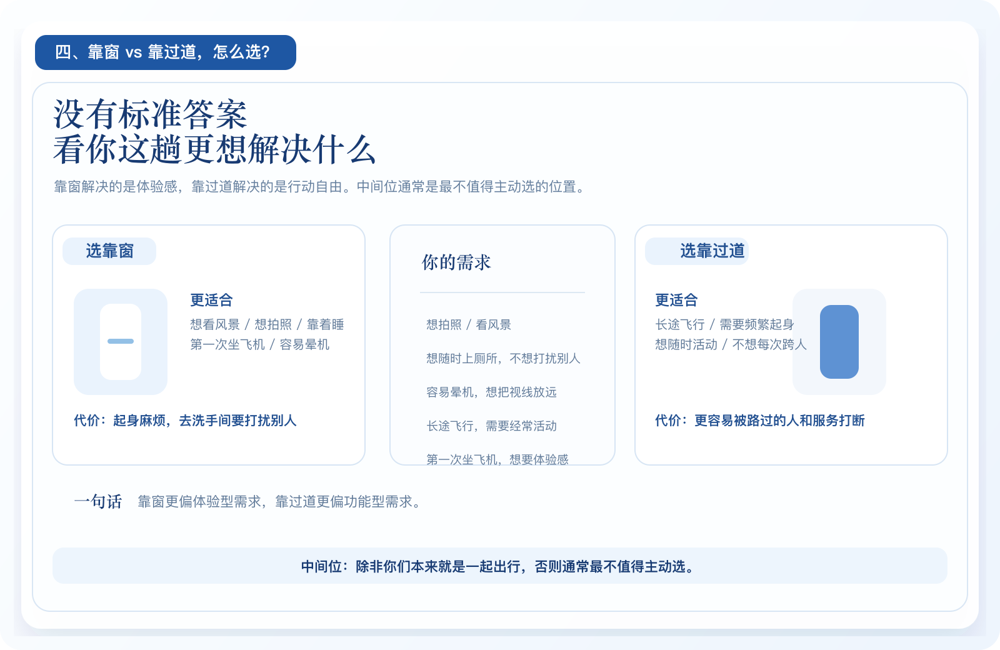
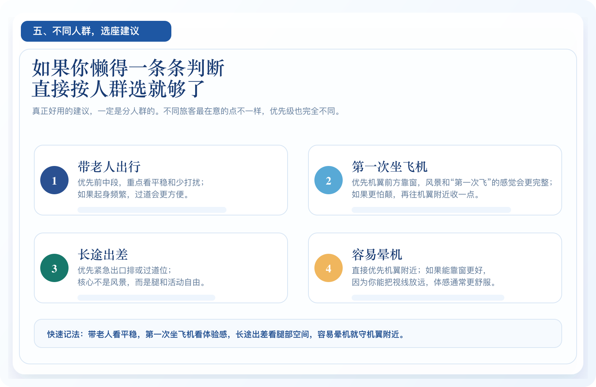

选座全攻略：哪里最稳、哪里最吵、哪里能伸腿
靠窗还是过道？前排还是后排？一篇讲清，下次选座不再盲选
每次买完机票，真正让人卡住很久的，往往不是买不买行李，也不是值不值机，而是选座。
靠窗还是靠过道？前排是不是一定更舒服？紧急出口到底值不值得多花钱？看起来只是点一个座位号，实际纠结的是整段飞行怎么过。
有人最怕颠，有人最怕吵，有人腿长，最在意能不能伸开；也有人第一次坐飞机，想把窗外风景看个够。问题不是“哪个位置最好”，而是你这趟飞行最想优先解决什么。
选座的本质，从来不是找完美座位，而是在安静、平稳、宽敞里做取舍。
一、先记住这句话：选座，不是选“最好”，而是选“最适合你”
很多人一打开座位图，就默认自己在找一个“最值”的位置。但现实是，飞机上的好位置从来不是统一答案。
你想要平稳，就不一定能得到最好的拍照视野；你想要安静，可能就要接受价格更高或者离婴儿摇篮位更近；你想要最大腿部空间，也往往意味着规则更多、起降时更受限制。
二、飞机上最值得优先考虑的位置，其实就三类
求稳，优先看机翼附近。这里更接近重心区域，遇到气流时体感通常更柔和一些，适合第一次坐飞机、带老人小孩，或者本身容易晕机的人。
求静，优先看前排靠窗。前舱通常更安静，人流也更少，适合想补觉、看书，或者整段飞得更轻松的人。
求腿部空间，优先看紧急出口排。经济舱里最明显的差别就在这里，长途飞行或者个子高的人会觉得非常值，但也要接受更多安全限制，部分航司还会额外收费。

三、这几个位置，真别抱侥幸心理
最后一排最大的问题，不只是靠背调节可能受限，而是整段飞行里更容易被后舱环境不断打断。离厕所近、人流杂、整体体验往往更累。
厕所旁边更典型。味道只是表面问题，真正烦的是你很难真正安静下来。有人排队、有人站着等、门开了又关，整段飞行都容易被切碎。
机翼后方的靠窗位也常常让人失望。不是它不能坐，而是如果你本来想看风景、拍云海、拍日落，最后相机里大概率全是机翼。

四、靠窗和靠过道，到底怎么选？
靠窗更适合体验型需求。想看风景、拍照、靠着睡，或者本身容易晕机的人，通常会更喜欢靠窗。尤其是第一次坐飞机，这个位置更有“真正坐上飞机了”的感觉。
靠过道更适合功能型需求。长途飞行、需要频繁起身、想随时活动、不想每次去洗手间都跨人，靠过道会明显更省事。
真正最不建议主动选的，通常还是中间位。看不到风景，出去不方便，左右都受限制。除非本来就是和家人朋友一起出行，不然它很少会成为让人满意的位置。

五、如果你懒得一条条判断，直接按人群选就够了
带老人出行，优先前中段，重点看平稳和少打扰；如果老人起身频繁，过道位会更方便。
第一次坐飞机，想要体验感，优先机翼前方靠窗。风景和那种“第一次飞”的感觉，都会更完整。
长途出差，优先紧急出口排或过道位。核心不是风景，而是腿和活动自由。容易晕机的人就别纠结，优先机翼附近，能靠窗更好，因为能把视线放远。

六、选座还有几个很容易被忽略的小细节
- 同一个座位号，不同机型里可能完全不是一回事。别只记 31A、17F 这种号码，真正该看的永远是当次航班的座位图。
- 有些看起来好的位置，需要额外付费。前排、紧急出口排、部分热门靠窗位，在不少航司那里通常不是默认免费位置。
- 夜航不一定天然适合靠窗。如果你更想休息，而不是看景，夜航更该优先考虑能不能真正睡好，而不是窗边浪漫不浪漫。
七、一句话总结：先想你最怕什么，再选位置
如果你怕晕、怕颠，就优先机翼附近；如果你怕吵、想休息，就优先前排；如果你腿长、飞得久，就优先紧急出口排；如果你是第一次飞、想看风景，就优先机翼前方靠窗。
真正有用的，不是背下一堆“哪个位置最好”，而是下次一打开座位图，你能立刻知道自己这趟飞行最在意的是稳、静还是宽。
本文依据常见民航选座逻辑、公开座位布局信息及不同航司常见服务规则整理。不同机型、不同航司、不同票价舱位下，可选座位、额外付费范围及座位布局可能存在差异，具体请以实际购票页面和当次航班座位图为准。